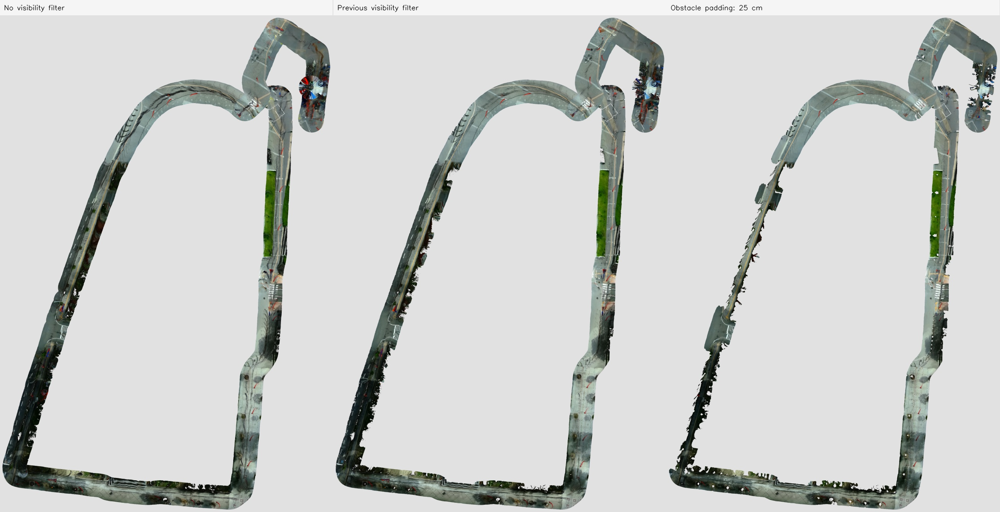
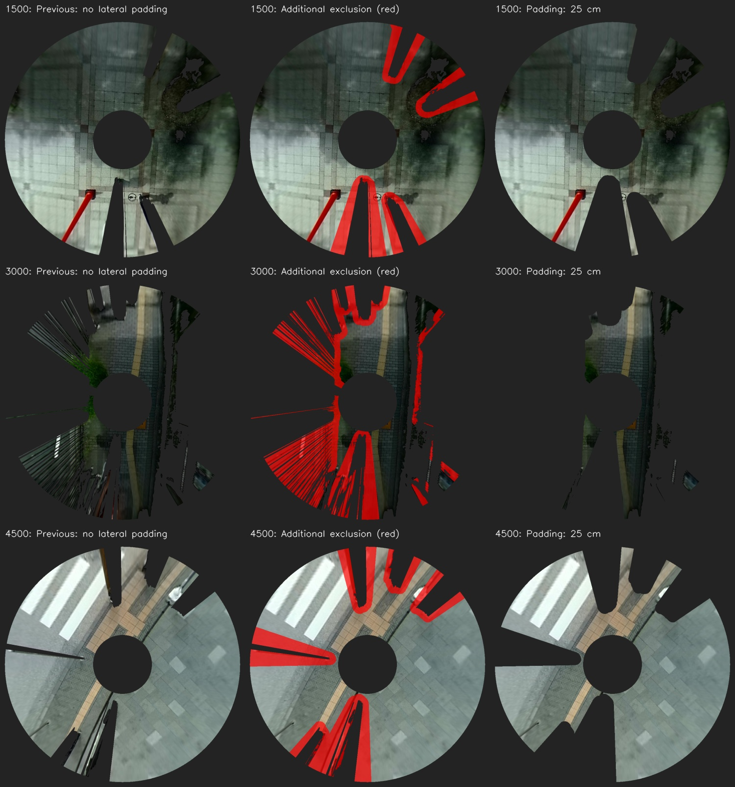

局所比較：4区間で前後の重みを比較した結果はこちら
real_both_mapping_20260920_113447_recovered / 解像度5cm / SAM3は路面分類のみ。
LiDARの各検出点の周囲に半径25cmの円を置き、その円と視線が交差する範囲まで遮蔽を広げました。前回の距離方向の余裕10cmも維持しています。距離やビーム数に応じて余白が変わらないよう、メートル単位で計算しています。
今回の観測面積は通常版の84.9%、前回の遮蔽除外版の87.7%。これは残像除去率ではありません。取り込まない観測が増えるため、一部の路面に欠けが増える可能性があります。
今回は路面RGBで効果を比較しています。SAM3が処理する撮影時刻は再生ごとに変わるため、意味ラベル数の差を切り取りの効果として評価していません。


床の色は生成せず、別時刻で実際に見えた観測だけで蓄積します。LiDARが捉えない障害物は、余白を増やしても除外できない場合があります。
{
"baseline": {
"observed_cells": 2088863,
"area_m2": 5222.16,
"resolution": 0.05,
"origin": [
-110.50061430815602,
-167.9387912057118
],
"size": [
2695,
4025
],
"tactile_semantic_cells": 219
},
"previous": {
"observed_cells": 2022376,
"area_m2": 5055.94,
"resolution": 0.05,
"origin": [
-110.48511736631042,
-167.9387912057118
],
"size": [
2702,
4026
],
"tactile_semantic_cells": 1866
},
"padded": {
"observed_cells": 1774380,
"area_m2": 4435.95,
"resolution": 0.05,
"origin": [
-110.30067416341491,
-167.9387912057118
],
"size": [
2698,
4026
],
"tactile_semantic_cells": 298
},
"padded_vs_current_baseline_area_ratio": 0.8494477617727921,
"padded_vs_previous_area_ratio": 0.8773739403553048
}前回の比較 / 拡張版の路面RGB（原寸） / 今回の設定